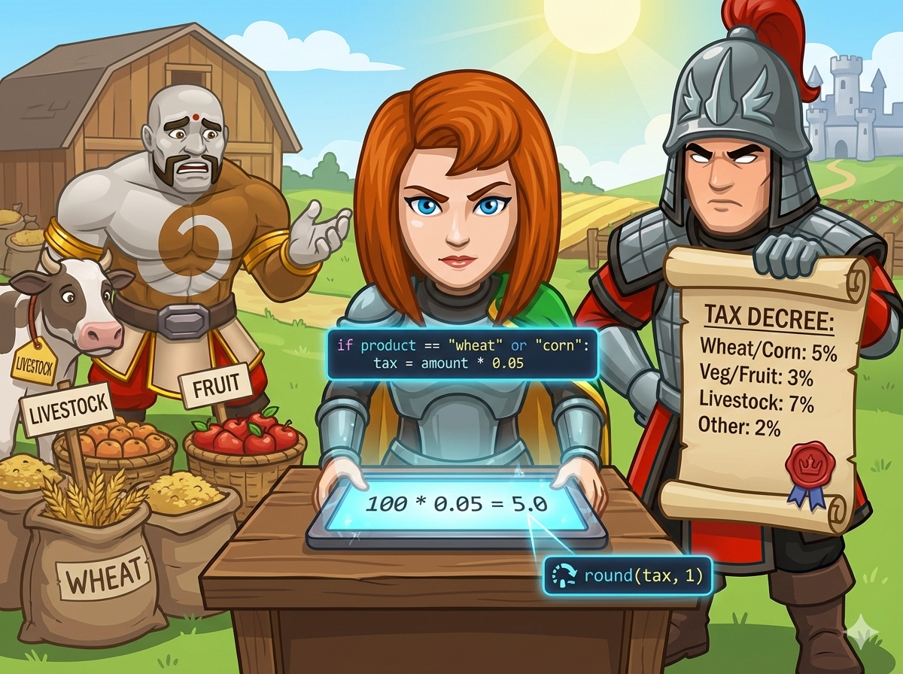

你是平原王国的聪明小管家。国王发布了新的“农场税令”，你需要根据农产品的种类，计算要交给税务骑士多少金币。
税务卷轴上写着四条规则：
⚠️ 注意： 税务骑士要求非常严格，计算结果必须 保留 1 位小数！

在 C++ 中，switch 语句 不能 直接处理字符串（string）！
❌ 错误：switch(kind) { case "wheat": ... }
✅ 正确：通常用 if - else if 逐一比较：if (kind == "wheat") ...
如果我们非要用 switch，可以使用“映射”技巧：
1️⃣ 先用 if 判断，把字符串转化为对应的数字 ID（比如 wheat=1, corn=1...）。
2️⃣ 然后对这个数字 ID 使用 switch。
这种方法将“分类逻辑”和“计算逻辑”分开了，代码结构有时会更清晰。
要让 cout 输出固定的小数位数，需要用到流控制符。
1️⃣ 引入头文件：#include <iomanip>
2️⃣ 使用咒语：fixed << setprecision(1)
这表示：以固定点格式显示，且保留小数点后 1 位。
如果要判断一个东西是不是属于某几个中的一个，Python 有个超方便的写法 in。
✅ 写法：if kind in ["wheat", "corn"]:
这比写 if kind == "wheat" or kind == "corn": 要简洁得多！
Python 的 f-string 是处理字符串的神器。
要保留 1 位小数，只需在大括号里加上 :.1f。
📝 示例：print(f"{tax:.1f}")
意思是：把 tax 这个变量，格式化为浮点数(f)，保留小数点后 1 位。
最直接的方法，逐个判断字符串内容。
#include <iostream> #include <string> // string 类型头文件 #include <iomanip> // setprecision 头文件 using namespace std; int main() { string kind; // 农产品种类 int x; // 产量或价值 cin >> kind >> x; double rate; // 税率 // 直接使用 if-else 判断字符串 if (kind == "wheat" || kind == "corn") { rate = 0.05; } else if (kind == "vegetable" || kind == "fruit") { rate = 0.03; } else if (kind == "livestock") { rate = 0.07; } else { rate = 0.02; } double tax = x * rate; cout << fixed << setprecision(1) << tax; return 0; }
先将字符串“翻译”成数字 ID，再用 switch 进行分支，结构更规整。
#include <iostream> #include <string> #include <iomanip> using namespace std; int main() { string kind; int x; cin >> kind >> x; int type = 0; // 用数字代表种类：1粮, 2蔬果, 3牲畜, 4其他 // 1. 映射过程：将字符串转换为数字 ID if (kind == "wheat" || kind == "corn") type = 1; else if (kind == "vegetable" || kind == "fruit") type = 2; else if (kind == "livestock") type = 3; else type = 4; double rate; // 2. 使用 switch 处理逻辑 switch(type) { case 1: rate = 0.05; break; case 2: rate = 0.03; break; case 3: rate = 0.07; break; case 4: rate = 0.02; break; } double tax = x * rate; cout << fixed << setprecision(1) << tax; return 0; }
使用列表和 in 关键字简化判断，用 f-string 格式化输出。
# 1. 读入一行数据 line = input().split() kind = line[0] # 种类 (字符串) x = int(line[1]) # 数量 (转为整数) # 2. 判断税率 if kind in ["wheat", "corn"]: rate = 0.05 # 5% elif kind in ["vegetable", "fruit"]: rate = 0.03 # 3% elif kind == "livestock": rate = 0.07 # 7% else: rate = 0.02 # 其他 2% # 3. 计算税金 tax = x * rate # 4. 格式化输出 (保留1位小数) print(f"{tax}:.1f")